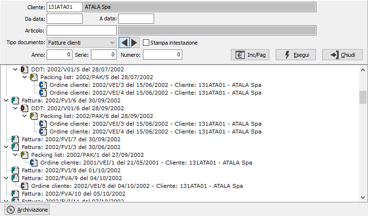
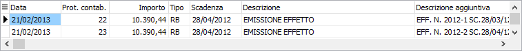

Analisi flusso documenti clienti
Il programma provvede a delineare la tracciabilità dei documenti selezionati, visualizza uno schema dove riporta tutti i passaggi che sono avvenuti per giungere ai documenti della selezione. Posizionandosi sul primo documento ed espandendolo vengono visualizzati i documenti che lo compongono, posizionandosi ed espandendo questi ultimi, si scende sempre più nel dettaglio, inoltre il programma lega il ciclo attivo a quello passivo tramite gli ordini. Facendo doppio clic su un documento si accede a tale gestione. Contestualmente è disponibile anche la stampa dei dati visualizzati. Con gli appositi pulsanti direzionali è possibile invertire l'analisi, cioè determinare cosa è stato originato dal documento selezionato.

CLIENTE: eventuale codice del cliente, presente in anagrafica, con cui si vuole eseguire l’analisi. Confermando a vuoto, la selezione comprende tutti i clienti validi. Sul campo sono attive le funzioni di ricerca (F9).
DA DATA: eventuale data del documento da cui deve iniziare l’analisi flusso dei documenti relativamente ai precedenti parametri di selezione. Confermando a vuoto, l’analisi inizia con il primo documento valido.
A DATA: eventuale data del documento a cui deve terminare l’analisi flusso dei documenti relativamente ai precedenti parametri di selezione. Confermando a vuoto, l’analisi termina con l’ultimo documento valido.
ARTICOLO: eventuale codice di un prodotto specifico per cui si vuole eseguire l'analisi. Sul campo sono attive le funzioni di ricerca (F9).
TIPO DOCUMENTO: consente di stabilire il tipo di documento di cui si intende eseguire l’analisi. Valori ammessi: Fatture clienti; Ddt clienti; Ordini clienti; Packing list; Offerte clienti. Tramite i tasti direzionali è possibile determinare se analizzare i documenti che derivano dal tipo selezionato (direzione destra), oppure i documenti che hanno dato origine al tipo selezionato (direzione sinistra).
STAMPA INTESTAZIONE: Indica se stampare una pagina con i criteri di selezione, l’operatore, la data e l’ora (casella con segno di spunta).
ANNO: eventuale anno con cui si desidera eseguire l’analisi. Sul campo sono attive le funzioni di ricerca (F9), che visualizzano una maschera per avere una selezione dei documenti più dettagliata.
SERIE: eventuale serie con cui si desidera eseguire l’analisi.
NUMERO: eventuale numero documento con cui si desidera eseguire l’analisi.

Il pulsante consente di visualizzare per ogni fattura, già contabilizzata, gli incassi presenti sulle partite aperte; se si fa doppio clic sul rigo della scadenza si accede al relativo movimento contabile.